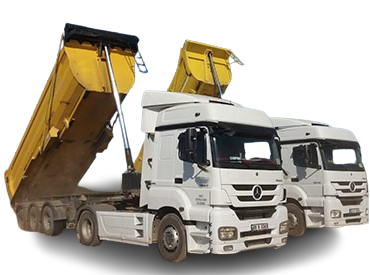
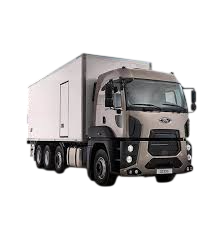
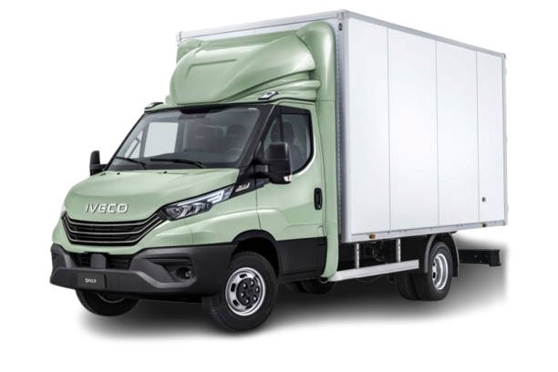
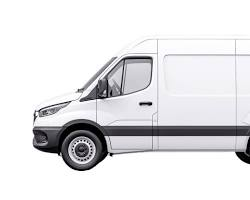

AYHANLAR
Lojistik & Nakliye
Güvenilir, Hızlı, Özenli Taşımacılık

Güvenilir, Hızlı, Özenli Taşımacılık

Malatya şehir içi ve şehirlerarası nakliye, evden eve nakliyat, tonajlı-tonajsız taşımacılık, hafriyat ve yük asansörü hizmetleri.
Her boyutta yük için doğru araç

10 Teker | 16 Ton Kapasite
Ağır Yük
6 Teker | 3.5 Ton Kapasite
Orta Yük
Uzun Mesafe | Ağır Nakliyat
Şehirlerarası
Hızlı Teslimat | Kurye & Eşya
Hızlı TeslimatMerdiven taşımacılığına son – Güvenli, hızlı ve hasarsız
1. kattan çatı katına kadar tüm katlarda yük asansörümüzle eşyalarınızı taşıyoruz. Dar merdiven problemi yok.
Koltuk takımı, yatak odası, beyaz eşya ve ofis mobilyaları asansörle hasar görmeden taşınır.
Yük asansörümüz ile yapılan tüm taşımalarda eşyalarınız sigorta kapsamındadır.
Merdiven taşımacılığına kıyasla 3-4 kat daha hızlı yükleme ve boşaltma imkânı.
Dış cephe yük asansörü ile tüm katlara servis
Profesyonel, deneyimli ve sigortalı ekibimizle tam hizmet
En ağır ve kırılgan eşyaları bile özenle paketleyip taşıyan deneyimli ustalarımız her taşımada görev alır.
SRC belgeli, tecrübeli sürücülerimiz araçları ve yükü en güvenli şekilde teslim eder.
Yük asansörünü güvenle kullanan, yükseklik konusunda sertifikalı operatörlerimiz.
Taşınma sürecinizi baştan sona planlayan, rota ve zamanlama koordinasyonunu üstlenen ekibimiz.
Nakliyecilik denilince akla gelen her şey
Komple yük ve parça yük seçeneğiyle tüm Türkiye'ye nakliyat hizmeti.
Paketleme, taşıma ve montaj dahil eksiksiz ev ve ofis taşımacılığı.
Dış cephe yük asansörü ile her katta hızlı ve hasarsız taşıma.
Mobilya ve ofis ekipmanlarının profesyonel sökümü ve kurulumu.
Kırılgan ve değerli eşyalar için özel ambalaj malzemeleriyle güvenli paketleme.
İnşaat ve altyapı projeleri için tonajlı hafriyat ve nakliye hizmeti.
Ayhanlar Lojistik olarak Malatya merkez başta olmak üzere tüm ilçelerde şehir içi ve şehirlerarası nakliye hizmeti vermekteyiz. Evden eve nakliyat, ofis taşımacılığı, tonajlı ve tonajsız yük taşıma, hafriyat ve yük asansörü hizmetlerini profesyonel ekibimizle sunuyoruz.